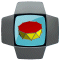
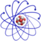

Free Recommendations

AntiPrism
Live USB/memory card OpenELEC-based media server toolbox platform for securing the online presence, web browsing and communications.
ArkOS
arkOS is a lightweight software stack that runs on a Raspberry Pi to securely self-host your websites, email, files and more.

DragonFly BSD
DragonFly BSD is a free Unix-like operating system created as a fork of FreeBSD 4.8. Matthew Dillon, an Amiga developer in the late 1980s an…
FreedomBox
FreedomBox integrates privacy protection on a cheap plug server so everybody can have privacy.
NetBSD
NetBSD is an open-source Unix-like operating system descended from Berkeley Software Distribution (BSD), a Unix derivative developed at the …


Scientific Linux
Scientific Linux (SL) is a Linux distribution produced by Fermi National Accelerator Laboratory and the European Organization for Nuclear Re…
SME Server
Simple distro based on CentOS with preconfigured mail, file sharing, web server, and more.
Verdt å merke seg
Apple, Google og Microsoft står bak proprietære operativsystemer som ikke kan beskytte deg mot NSA, eller noen andre.
Du burde istedenfor kjøre et fritt alternativ: GNU/Linux eller BSD.
Proprietært